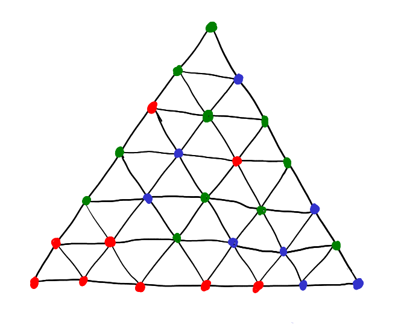
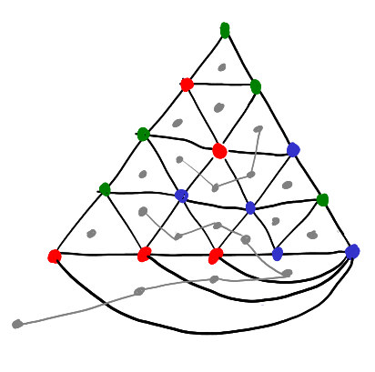
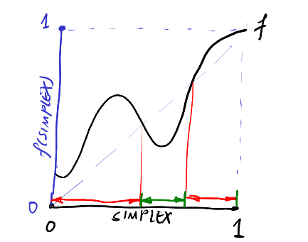
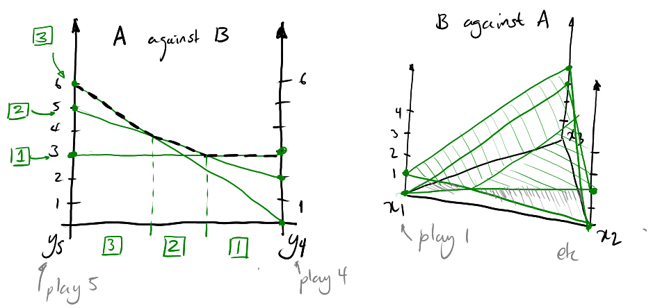
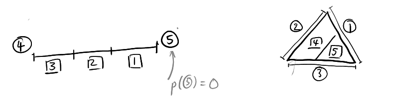
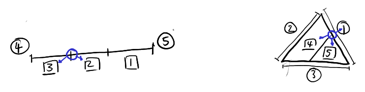
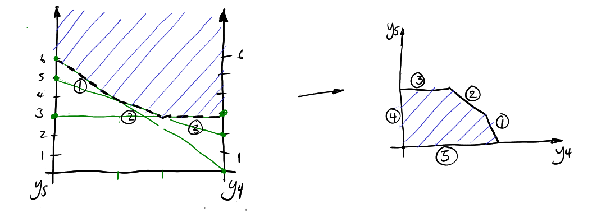
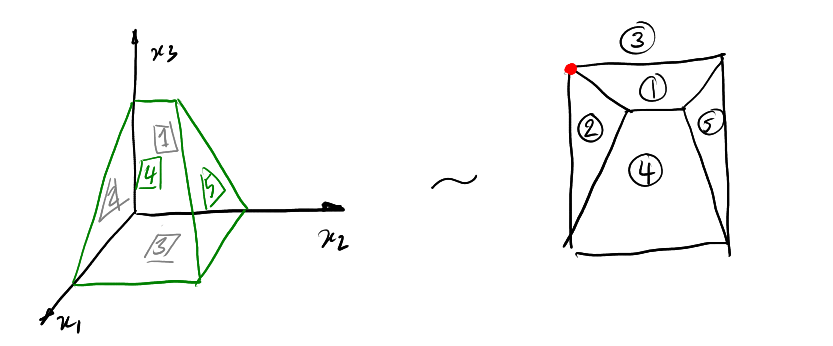

### Introduction
Brief, hopefully very short notes on game theory.
***Thm.*** There are more detailed lecture notes and you should go find them.
Some of this is covered in A level further maths.
1. [Games](#game)
2. [Nash's Theorem](#nash)
### The Tragedy of the Commons
Suppose $n$ people want to send information over a shared channel.
- Each user $i$ sends $x_i \in [0,1]$ through the channel, to maximise their own bandwidth.
- The channel has limited capacity, 1.
- The channel breaks if $\sum_{\forall i} x_i \gt 1$
- Otherwise, the channel linearly decreases in quality, so each user has effective payoff $x_i (1 - \sum_{\forall i} x_i)$.
How do you maximise your send rate? Suppose you are $i$, and the effect caused by other users are $t := \sum_{\forall j \neq i} x_j$, then your benefit is $x_i (1 - t - x_i)$ (need to include own effect).
Maximise this. -> If $t \gt 1$, then there's nothing you can do. But otherwise, the best you can get is by setting $x_i = \frac{1-t}{2}$ (Use A level optimisation techniques).
In general the only stable state in where the channel is not broken is $x_i = \frac{1}{n+1}$. This grants a profit of $ \frac{n} { {n+1}^2} $ total. The tragedy is that if each user chose $x_i = \frac{1}{2n}$, the total profit would have been greater. But this is not a stable solution.
$$
\newcommand{\R}{\mathbb{R}}
\newcommand{\bb}{\mathbb}
\newcommand{\rm}{\textrm}
\renewcommand{\vec}{\mathbf}
\newcommand{\lra}{\longrightarrow}
\newcommand{\sopt}{\sigma^\*}
\newcommand{\xopt}{x^\*}
\newcommand{\mixstrat}[1]{ \Delta^{|S_{ #1}|} }
\newcommand{\mixzero}[1]{ \Delta^{m_#1} }
\newcommand{\t}{^\top}
\newcommand{\x}{\vec{x}}
\newcommand{\y}{\vec{y}}
\DeclareMathOperator{\argmin}{argmin}
\DeclareMathOperator{\argmax}{argmax}
$$
Games
***Game Vocab.***
- A game has a set of $n$ rational players $[n] = \\{1..n\\}$.
- Each player $i$ has a set of (mostly finite) **strategies** $S_i = \\{s_1..s_n\\}$.
- Each player has a **payoff function** $p_i : S_1 \times S_2 \times \cdots \times S_n \lra \R$
- An outcome is each player selecting a strategy, $(s_1, s_2, \dots, s_n)$ and the payoff that $i$ receives is $p_i(s_1..s_n)$.
- Each game is played once and each player wants to maximise payoff. Players have **complete information**.
### Dominating Strategies
***The Prisoner's Dilemma.***
1\\2 | confess | silence
-|-|-
**confess** | -10/-10 | -1/-25
**silence** | -25/-1 | -2/-2
Note player 1 takes rows and player 2 takes columns. In this game without communication you are always better off by confessing.
Confessing **dominates** staying silent.
***Dominating strategies.*** For two strategies $s,t$, $s$ dominates $t$ if for any fixed action set of other players, the payoff for playing $s$ is **strictly greater** than that of $t$.
***Iterated elimination of dominated strategies*** means iteratively looking for dominated strategies, removing them from the game, and repeating until no more can be found.
If this results in a 1x1, we have found a solution.
The order of elimination doesn't matter here (due to *strict* greatness).
***Weakly Dominating Strategies.*** $s$ weakly dominates $t$ if for any (blah blah blah) the payoff for playing $s$ is **greater or equal to** $t$.
Note that in eliminating weakly dominated strategies, *order matters*.
In fact, by arbitrarily adding states to a game that will be weakly eliminated automatically, we can turn several stable states into just one, thus this is not something to do carelessly.
### Nash Equilibria
***Battle of the Sexes.***
Alice\\Bob | costa | starbucks
-|-|-
**costa** | 3/1 | 0/0
**starbucks** | 0/0 | 1/3
Intuitively there are two stable states. Formally,
***Best Response.*** Suppose each player chooses some strategy. For player $j$, the strategy $s_j$ is a best response to all other players if they get no higher payoff by switching:
$$ p_j (s_1..s_n) \geq \max_{x \in S_j} p_j(s_1..s_{j-1},x,s_{j+1}..s_n) $$
***Pure Nash Equilibrium.*** A PNE of a game is a strategy profile where each players' strategy is a best response of all others.
By noting down best responses for each player, a square where both have best responses is a PNE.
1\\2 | A | B
-|-|-
**1**|1/(6)|3/5
**2**|0/1 | (4)/(6)
**3**|(2)/2 | 2/(3)
(2,B) is the best response.
### Mixed Strategies
***Poisoned Drink.*** Sometimes there are no PNEs. Look at this:
A\\B | own | other
-|-|-
**own** | -1 / 1 | 1 / -1
**other** | 1 / -1 | -1 / 1
We need to find mixed strategies.
***Mixed strategies.*** A mixed strategy of strategy set $S_i$ is a probability distribution of intended plays.
Denote the mixed strategy as an $|S_i|$-dim vector where each entry is a probability for that $s_i$. Let $\mixstrat{i}$ denote the *set of mixed strats* for $i$ -- the **mixed strat. simplex.**
For 2 strategies, this is like a line where the left corresponds to strategy 1 with $p=1$, and the right to strategy 2 with $p=1$. For 3 strategies, a triangle, four a tetrahedron, five... and we'll stop there.
Let $\sigma = (\sigma_1 .. \sigma_n)$ be the **mixed strategy profile** where each player plays a mixed strategy. Let
- $\sigma_{-i}$ mean a profile with $i$ taken out.
- $(\sigma_{-i}, \sigma_i) = \sigma$.
- $p_i(\sigma)$ is of course the payoff.
***Mixed nash equilibrium.*** A MNE $\sigma^*$ is a strategy profile where:
$$\forall i \in [n];\\; \forall \sigma_i \in \mixstrat{i} ; \\; p_i (\sopt_{-i}, \sopt_i) \geq p_i (\sopt_{-i}, \sigma_i) $$
i.e. no player can do better by switching.
***Lemma.*** A strategy profile $\sopt$ is NE $\iff$ for each player $i$ each pure strategy of $i$ is played with probability 0 or as a best response to all other players $\sopt_{-i}$.
$$ \forall i \in [n];\\; \forall s_i \in S_i ;\\; \sopt_i (s_i) = 0 \lor p_i(\sopt_{-i}, s_i) = \max_{s_i' \in S_i} p_i(\sopt_{-i}, s_i') $$
### 2P Zero Sum Games
Where the profit of one player == the loss of another. Usually only payoffs for player 1 are displayed, and can be in matrix form. Consider:
$$
G = \begin{bmatrix}
2 & -23 & -8 & 17 \\\\
3 & 5 & -3 & 7 \\\\
-3 & 2 & 3 & 5 \\\\
-9 & 12 & 1 & -9
\end{bmatrix}
$$
If player 1 plays mixed strat $\vec{a}\t = (0, \frac12, \frac12, 0)$, then for player 2 the *expected payoff* for each column is
$$
\begin{bmatrix}
0 & \frac12 & \frac12 & 0
\end{bmatrix}
\begin{bmatrix}
2 & -23 & -8 & 17 \\\\
3 & 5 & -3 & 7 \\\\
-3 & 2 & 3 & 5 \\\\
-9 & 12 & 1 & -9
\end{bmatrix}
=
\begin{bmatrix}
0 & -\frac72 & 0 & -6
\end{bmatrix}
$$
Similarly if 2 plays $\vec{b}\t = (\frac12, 0 \frac12, 0)$ then player 1 gets
$$
\begin{bmatrix}
2 & -23 & -8 & 17 \\\\
3 & 5 & -3 & 7 \\\\
-3 & 2 & 3 & 5 \\\\
-9 & 12 & 1 & -9
\end{bmatrix}
\begin{bmatrix}
\frac12 \\\\ 0 \\\\ \frac12 \\\\ 0
\end{bmatrix}
=
\begin{bmatrix}
-3 \\\\ 0 \\\\ 0 \\\\ -4
\end{bmatrix}
$$
Note that each probability dist is a best response to the other player. The total payoff is
$$ \vec{a}\t G \vec{b} = 0 $$
-----
We require some awareness of linear programming (exercise left to the reader).
***Thm.*** (strong duality theorem) If the primal or dual of a linear program has an optimal solution of finite value, then so does the other, with the *same* value.
In 0-sum games one strategy is to try maximise your guaranteed payoff. I.e. player 1 chooses a mixed strategy that gives the highest expected payoff assuming player 2 chooses the worst possible option for 1 -- maximin (or minimax).
As an LP problem, this resolves to:
\begin{align}
\max_{\x \in (\Delta^{m_{1}}), v} & v \\\\
\rm{subject to } & \x\t A \geq \begin{bmatrix}
v & \cdots & v
\end{bmatrix}
\end{align}
Where $\x \in \Delta^{m_1}$ means entries of $\x$ are non-negative and sum to 1. I.e. $\x \geq \vec0$ and $\vec1 \t \x = 1$.
We assume all entries in A are non-negative. Enforce this by adding a large value to A of at least the smallest element, which changes the payoffs but *not* the equilibria. Then we can relax to $\vec1 \t \x \geq 1$ and get the linear program:
\begin{align}
\max\\; & \begin{bmatrix}
0 & \cdots & 0 & 1
\end{bmatrix}
\begin{bmatrix}
x_1 \\\\ \vdots \\\\ x_{m_1} \\\\ v
\end{bmatrix} &\\\\
\rm{subject to } & \begin{bmatrix}
& & & 1 \\\\
& -A\t& & \vdots \\\\
&&& 1 \\\\
1 &\cdots & 1 & 0
\end{bmatrix}
\begin{bmatrix}
x_1 \\\\ \vdots \\\\ x_{m_1} \\\\ v
\end{bmatrix} \leq
\begin{bmatrix}
0 \\\\ \vdots\\\\ 0 \\\\ 1
\end{bmatrix} \\\\
& \begin{bmatrix}
x_1 \\\\ \vdots \\\\ x_{m_1} \\\\ v
\end{bmatrix} \geq \vec0
\end{align}
Player 2 maximises their payoff == minimising player 1's payoff:
\begin{align}
\min\\; & \begin{bmatrix}
0 & \cdots & 0 & 1
\end{bmatrix}
\begin{bmatrix}
y_1 \\\\ \vdots \\\\ y_{m_2} \\\\ w
\end{bmatrix} &\\\\
\rm{subject to } & \begin{bmatrix}
& & & 1 \\\\
& -A && \vdots \\\\
&&& 1 \\\\
1 &\cdots & 1 & 0
\end{bmatrix}
\begin{bmatrix}
y_1 \\\\ \vdots \\\\ y_{m_2} \\\\ w
\end{bmatrix} \leq
\begin{bmatrix}
0 \\\\ \vdots\\\\ 0 \\\\ 1
\end{bmatrix} \\\\
& \begin{bmatrix}
y_1 \\\\ \vdots \\\\ y_{m_2} \\\\ w
\end{bmatrix} \geq \vec0
\end{align}
These are **dual** and have the same value.
***Maximin and Minimax.*** A strategy $\x \in \Delta^{m_1}$ is maximin if
$$ \x \in \argmax\_{\x' \in \mixzero 1} \min\_{j \in [m_2]} (A\t \x')\_j $$
A strategyt $y \in \mixzero 2$ is minimax if
$$ y \in \argmin\_{\y' \in \mixzero 2} \max\_{i \in [m_1]} (A\y')\_i $$
This is called a minimax equilibrium.
***Thm.***
- For 2 player zero sum games a pair of maximin and minimax strategies forms a NE.
- All NE have the same expected payoff. The payoff for 1 is the **value** of the game.
- A NE can be computed in poly time ($n = $ pure strats)
Nash's Theorem
### Introduction
Nash equilibria always exist for general games. This section is important.
### Sperner's Lemma

Consider a triangular graph subdivided into smaller triangles. Vertices are coloured and a **valid colouring** follows these rules:
1. All three corners have a unique colour.
2. No points on the opposite edge to a corner can have that colour.
3. Internal points can be any colour.
***Lemma.*** Each valid colouring of the graph will have at least one small triangle with three corners coloured differently (tri-chromatic).
There are an odd number of these.
-----
***Proof 1.*** (The counting argument) WLOG let:
- $\ell$ be the number of tri-chromatic triangles we want this to be odd
- $k$ be the number of red-blue triangles -- triangles without green corners.
We are interested in "red-blue edges" -- edges which have a red and a blue corner. These can be (1) internal, or (2) on the big triangle edge.
(2)-type red blue edges must be entirely opposite the green corner. We claim that the number of these $x$ is odd.
This is because if you take a walk from the red corner to the blue corner, you start and end in a different colour, therefore there must be an *odd* number of switches in colour, hence odd $x$.
(1)-type red blue edges are inside the triangle, there are $y$ many of these.
The total number is then $x + y$.
- Each red-blue triangle must have 2 red-blue edges.
- Each trichromatic triangle has 1 red-blue edge.
- So the total number of red-blue edges is $2k + \ell$.
- So $x + y = 2k + \ell$? Actually, $y$ internal edges are counted *twice*, since two triangles share an edge, and so actually $x + 2y = 2k + \ell$
- $\therefore \ell = 2(y-k) + x$ which is **odd** as $x$ is odd.
$\Box$
-----

***Proof 2.*** (Connecting argument)
- Take the bottom edge. Connect the bottom right corner to all non-adjacent bottom nodes.
- This is a planar graph -- we have a number of faces (including the outside of the graph as a face)
- Place a node in each face (including the outside)
Define a new graph (grey) $:=$ two nodes are connected if two cells share a red-blue edge.
- Each node can have 0, 1, or 2 connections.
- None can have 3 (as we can't have 3 red-blue edges around a triangle).
- So we only have: (1) isolated nodes, (2) simple paths, (3) simple cycles.
- Tri-chromatic triangles must exist at the *ends* of paths.
- Ends come in pairs $\implies$ there are an even number of tri-chromatic triangles, **but** one of these *must* be the outside of the graph.
- Hence there are an **odd** number of tri-chromatic triangles.
$\Box$
-----
### Brouwer's Fixed Point Theorem
***Thm.*** Every continuous function $f:S \lra S$ over a $d$-dimensional simplex has a fixed point. ($\exists x : f(x) = x$)
In more words, $f$ maps points on a simplex to other points on the same simplex. There should be at least one point that maps to itself. It is akin to a continuous version of Sperner's lemma.
-----
***Proof 1.*** (1 dimensional simplex)
WLOG consider interval $[0,1]$, and a function $f:[0,1] \lra [0,1]$. If $f(0) = 0$ or $f(1) = 1$ then that is a fixed point. Thus consider when $f(0) \gt 0$ and $f(1) \lt 1$
Else, consider the function $g(x) = f(x) - x$ which is also continuous. Since $g(0) \gt 0$ and $g(1) \lt 0$, by the **intermediate value theorem** there exists a point $a : g(a) = 0 \implies f(a) = a$ is a fixed point.
$\Box$
-----

***Proof 2.*** (1 dimensional simplex)
Define a colour for each point in the simplex:
- *red* if $f(x) \gt x$;
- *green* if $f(x) \lt x$;
Therefore $f(0) \geq 0$ will be *red*, and $f(1) \leq 1$ will be *green*.
If we subdivide the simplex, just like in Sperner's lemma we can walk from the red to the green end, and must cross an *odd* number of edges. Subdivide until edge length reaches zero, and we have an odd number of switches. Hence at least one fixed point.
$\Box$
-----
***Proof 3.*** (2 dimensional simplex)
We need to use **barycentric coordinates** to talk about a triangle. That is, non-negatives coordinates $(x_1, x_2, x_3)$ where (1,0,0), (0,1,0), (0,0,1) are the coordinates of three corners. I.e. a coordinate is zero at the edge and one at the opposite corner. $x_1 + x_2 + x_3 = 1$.
A point $\x = (x_1, x_2, x_3)$ is mapped to $f(\x) = (y_1, y_2, y_3)$. Colour all points:
- *red* if $x_1 \gt y_1$
- *blue* if $x_1 \leq y_1 \land x_2 \gt y_2$
- *green* if $x_1 \leq y_1 \land x_2 \leq y_2 \land x_3 \gt y_3$
Note that if $f$ has no fixed point, then all points are coloured, but fixed points are left uncoloured.
This construction is actually a *valid colouring* of Sperner's lemma. That is, construct a sperner's lemma, where each node is coloured according to $f$ and the above rule.
Recursively subdivide and colour -- we will still have a valid colouring and tri-chromatic triangles. Repeat until edge length tends to zero, the tri-chromatic triangles will converge to single points -- these are our fixed points.
$\Box$
-----
> The proof for higher dimensions is identical. Brouwer's theorem is true for any convex compact set, not just a simplex.
### Nash's Theorem
***Thm.*** Every game has a nash equilibrium.
-----
***Proof.*** (for two player games)
> General idea: construct a function $f$ where fixed points are nash equilibria.
Let $\x \in \mixzero{1}$ be the strategy of player 1 and $\y \in \mixzero{2}$ be that of player 2. Let $A$ be the payoff matrix for 1 and $B$ for 2.
The payoff for 1 is $\x\t A \y$ and for 2 is $\x\t B \y$. For 1 $A\y$ gives payoffs for each mixed strategy, we denote $(A\y)_i$ as the payoff for strategy $i$. This is the same for 2 and $\x\t B$.
Define function $k_i$ as the improvement for a player switching to a pure strategy $i$ over using their mixed strategy $\x$. For player 1:
$$ k_i(\x, \y) = \max(0, (A\y)_i - \x\t A \y) $$
For player 2:
$$ k_i'(\x, \y) = \max(0, (\x\t B)_i - \x\t B \y) $$
Suppose we find a pure strategy that is better than our current mixed strategy. We want to adjust our mixed strategy to weight this pure strategy higher, by adding $k_i(\x, \y)$ onto the current probability of $x_i$ (and re-weight). That is, define for player 1:
$$ g(\x, \y) = \frac{1}{1 + \sum_{i \in [m_1]} k_i(\x, \y)} \begin{bmatrix}
x_1 + k_1(\x, \y) \\\\ \vdots \\\\ x_{m_1} + k_{m_1}(\x, \y)
\end{bmatrix}
$$
And for 2:
$$ h(\x, \y) = \frac{1}{1 + \sum_{i \in [m_2]} k_i'(\x, \y)} \begin{bmatrix}
y_1 + k_1'(\x, \y) \\\\ \vdots \\\\ y_{m_1} + k_{m_2}'(\x, \y)
\end{bmatrix}
$$
We can see that $g$ and $h$ are probability distributions, thus in the simplexes of the two players.
Define a continuous function $f : \mixzero{1} \times \mixzero {2} \lra \mixzero{1} \times \mixzero{2}$:
$$ f(\x, \y) = (g(\x, \y), h(\x, \y)) $$
Convex compat set product convex compat set is a convex compact set, thus we can use Brouwers fixed point theorem and say $f$ has a fixed point $(\x', \y')$.
At this fixed point $g(\x', \y') = \x'$ and $h(\x', \y') = \y'$.
We claim that $g(\x', \y') = \x' \implies \sum_{j \in [m_1]} k_j(\x', \y') = 0$.
> Intuitively this makes sense, if $g$ maps back to the same strategy, that implies there is no improvement from moving to any pure strategy. This makes this strategy a best response, but we have to prove it.
By contradiction, suppose $\exists i : x_i \neq 0$ and $k_i(\x', \y') \gt 0$. We assume that all other $k_j$ where $j \neq i$ are 0 (although this would generalise to multiple being nonzero). Then since $g(\x', \y') = \x'$
$$
x_i = \frac{ x_i + k_i(\x', \y') }{ 1 + \sum_{j \in [m_1]} k_j(\x', \y') }
$$
Since $\forall j \neq i;\\; k_j(\x', \y') = 0$
\begin{align}
x_i &= \frac{ x_i + k_i(\x', \y') }{ 1 + k_i(\x', \y') } \\\\
x_i + x_i k_i(\x', \y') &= x_i + k_i (\x', \y')
\end{align}
Which is only true when $k_i(\x', \y') = 0$, which contradicts our assumptions. Hence at this stationary point, player 1 would gain no benefit from switching to any pure strategy, thus his $\x'$ is a **best response** to 2. The argument applies similarly to player 2.
Since both are best responses, **this is a nash equilibrium**.
$\Box$
For the last half I didn't really understand the notes and what I had written did not make sense, so this is me working out the proof again on my own. Hopefully it makes sense and there's not some gaping logical error.
Finding Nash Equilibria
### Approximate Equilibria
The proof for Nash's theorem is not constructive, finding it is another matter.
For general games though, this is not trivial, as there are games where all equilibria have irrational probabilities. We can however **approximate:**
***Def.*** A strategy profile $\sopt$ is an **$\varepsilon$-Nash Equilibrium** if
$$
\forall i \in [n];\\; \forall \sigma_i \in \mixstrat{i};\\; p_i(\sopt_{-i}, \sopt_i) \geq p_i(\sopt_{-i}, \sigma_i) - \varepsilon
$$
i.e. we can only gain a marginal improvement by switching strategies.
***Def.*** A point $\xopt$ is a **$\varepsilon$-approximate fixed point** of a function $f: S \lra S$ if
$$ |f(\xopt) - \xopt | \leq \varepsilon $$
***Fact.*** Every $\alpha$-approximate fixed point of the nash theorem function corresponds to an $\varepsilon$-NE where
$$ \alpha = \frac{\varepsilon}{d^2 p_{\max}^2} $$
Where $d = \sum_{j} |S_j|$ is the size/dimension of the game, and $p_\max$ is the ratio of largest to smallest payoff.
The proof is not stated.
***Fact.*** The function constructed in nash's theorem is $c \cdot n \cdot d^2 \cdot p_\max$-Lipschitz, where $c$ is some large enough constant. Formally
$$
\forall \x, \y: \lVert f(\x) - f(\y) \rVert_\infty \leq (cnd^2 p_\max) \lVert \x - \y \rVert_\infty
$$
More formally:
***Thm.*** (Scarf's theorem)
- Let $S$ be a $d$-dimensional simplex which is subdivided into smaller simplices of diameter at most $\delta$.
- Let $f:S \lra S$ be a continuous function.
- Colour all the vertices such that if point $\vec{v}$ receives colour $i$, $f(\vec{v})_i \leq v_i$.
If we choose $\delta$ such that
- $\delta \leq \frac{\alpha}{2d}$ and
- $\forall x, y \in S : \lVert x - y \rVert_\infty \leq \delta$ (this implies $\lVert f(x) - f(y) \rVert_\infty \leq \frac{\alpha}{2d}$)
Then any point in a fully coloured (all-chromatic) subsimplex is an **$\alpha$-approx fixed point$**.
***Proof.*** Consider any point $\x = (x_1 .. x_{d+1})$ in a fully coloured $d$-dim simplex. To prove that $\x$ is an approximate FP, must show
$$ \forall j \in [d+1] : -\alpha \leq f(\x)_j - x_j \leq \frac\alpha d \pod{\leq \alpha} $$
For $f(\x)_j - x_j \leq \frac \alpha d$:
- Let $\y$ be a corner of the sub-simplex which $\x$ is in, which is coloured as $j$. $f(\y)_j \leq y_j$.
- The following hold:
- $\lVert \x - \y \rVert_\infty \leq \delta$ due to the size of the subsimplex.
- Which means $y_j - x_j \leq \delta$
- Also means $\lVert f(\x) - f(\y) \rVert_\infty \leq \frac{\alpha}{2d}$
By doing some magic:
$$ f(\x)_j - x_j = f(\x)_j + f(\y)_j - f(\y)_j -x_j $$
- And $f(\x)_j - f(\y)_j \leq \frac{ \alpha }{ 2d }$
- And $f(\y)_j \leq y_j$ so $f(\y)_j - x_j \leq \delta$
$$
\implies f(\x)_j - x_j \leq \frac{ \alpha }{ 2d } + \delta \leq \frac{ \alpha }{ 2d } + \frac{ \alpha }{ 2d } \leq \frac\alpha d.
$$
For $- \alpha \leq f(\x)_j -x_j$:
- Again
\begin{align}
f(\x)\_j - x\_j &= \left( 1 - \sum\_{i \neq j} f(\x)\_i \right) - \left( 1 - \sum\_{i \neq j} x\_i \right) \\\\
&= \sum\_{i \neq j} x\_i - \sum\_{i \neq j} f(\x)\_i
\end{align}
- We know that $x\_i - f(\x)\_i \geq -\frac{\alpha}d$ from before, hence
\begin{align}
f(\x)\_j - x\_j &\geq \sum\_{i \neq j}(..) - \frac{ \alpha }{ d } \\\\
&\geq d(-\frac{ \alpha }{ d }) = -\alpha \\\\
\therefore -\alpha &\leq f(\x)\_j - x\_j.
\end{align}
***Corollary.*** There exists a constant $c' \lt 1 : $ if the diameter $\delta \leq \frac{ c' \cdot \alpha }{ n \cdot d^3 \cdot p_\max }$ then every point in fully chromatic subsimplex is a $\varepsilon$-NE.
### Complexity of a NE Finding Algorithm
Nash is not NP-hard, but is **PPAD-Complete**.
PPAD problems reduce down to the problem EndOfTheLine
***Algorithm.*** EndOfTheLine:
In: A digraph $G$ where each vertex has indegree and outdegree $\leq 1$, and a node $v$.
Out: `true` if $v$ has indegree equal to outdegree, else `false`.
On its own, it's quite trivial. But the problem is encoded implicitly.
In:
- Two logic circuits $P, S$ with $k$ input and output bits. Size of $P, S$ is polynomial in $k$.
- The graph $G$ has $2^k$ nodes, each labelled by a $k$-long bitstring.
- Circuit $P$ returns **predecessors** of input node, and $S$ returs **successors**. I.e. an edge $(a,b) \in G \iff S(a) = b \land P(b) = a$.
This is a search problem where the graph is exponential in input size.
***Search Problem.*** A problem is a search problem if each instance each instance $x$ has search space $S_x$ of poly-length bit strings, with valid solutions $Q_x \subseteq S_x \land Q_x \neq \varnothing$.
It is efficient to check *if* a given $y \in Q_x$.
***Reduction.*** A reduction from problem $\Pi_1$ to $\Pi_2$ is a pair of poly-time functions $f, g$ where
\begin{align}
\forall x &\in \Pi_1 & f(x) &\in \Pi_2 \\\\
\forall y &\in \Pi_2 & g(y) &\in \Pi_1
\end{align}
Denote $\Pi_1 \leq_p \Pi_2$ (see CS260)
***PPAD-Complexity.*** Any search problem which reduces to EndOfTheLine is PPAD. Any problems which EndOfTheLine also reduces to is **PPAD-Complete**.
***Thm.***
**(1)** The problem Nash of finding a $\varepsilon$-NE is a search problem.
**(2)** Nash $\leq_p$ Brouwer which is finding a $\alpha$-approx fixed point
- Where the domain of the continuous function in Brouwer is *discretised*, and encoded as a logical circuit. Points in-between are linearly interpolated.
**(3)** Brouwer $\leq_p$ Sperner which is finding a fully coloured subsimplex
- Where the input is a circuit that takes a vertex and returns its colour.
**(4)** Sperner $\leq_p$ EndOfTheLine
**(5)** EndOfTheLine $\leq_p$ Nash
EOTL problems are not inherently hard, but their representation is compact and hard to reason with.
There are going to be better algorithms for specific cases.
### NE Finding for 2 Player Games
Use the game
A\\B | 4 | 5
-|-|-
**1** | 3 \\ 1 | 3 \\ 0
**2** | 2 \\ 0 | 5 \\ 2
**3** | 0 \\ 4 | 6 \\ 3
Inspect the mixed strategies of B by plotting A's best response. The dash shows $\max_{i} (A\y)_i$. We can do the same thing for B vs A.

First plot B's simplex, with $y_4$ at the right and $y_5 = 1 - y_4$ at the left. $y_4$ is the probability that B will play strategy 4 over strategy 5.
Plot all strategies of A and their payoff linearly interpolated over B's actions. The max of all these functions is the best response for A. The intersections mean either strategy works.
Do a similar thing for A's simplex. The simplex is now 2D, the graphs 3D, but it works about the same.
We care mostly only about the **regions** of best response:

We can label (with circles) the sides where a specific strategy will **not** be played.
A strategy profile is a **pair** of points on intersections. We know each strategy must be played with probability 0, or be a best response, so we look for a **pair of points that are adjacent to all possible strategies**.

That is our nash equilibrium.
### Lemke-Howsen Algorithm
LH works on **best response polytopes**. These are gotten from the *best response polyhedra*, which are all points above the line.

Algebraically A's best responses to B could be defined as
\begin{align}
H_2 = \\{ (y_4, y_5, v) :\\; & 3y_4 + 3y_5 \leq v \\\\
& 2y_4 + 5y_5 \leq v \\\\
& 0y_4 + 6y_5 \leq v \\\\
& y_4, y_5 \geq 0 \\\\
& y_4 + y_5 = 1 \\}
\end{align}
The best response polytope is this projected onto a plane where $v = 1$, i.e. divide, remove $v$, and remove the sum restriction:
\begin{align}
Q = \\{ (y_4, y_5) :\\; & 3y_4 + 3y_5 \leq 1 \\\\
& 2y_4 + 5y_5 \leq 1 \\\\
& 0y_4 + 6y_5 \leq 1 \\\\
& y_4, y_5 \geq 0 \\}
\end{align}
This has a similar structure, with the only difference being a point where (4) and (5) touch -- this is the projected *"infinity point"*, a phantom point where all strategies are played with probability zero. Do this with A's polytope and you get a funky looking shape that is usually flattened:

The red shows the phantom dot. Mathematically, these two can be succinctly put as:
\begin{align}
A \rm{ for } B &= \\{\y : A\y \leq \vec1 \land \y \geq \vec0 \\} \\\\
B \rm{ for } A &= \\{\x : \x\t B \leq \vec1 \land \x \geq \vec0 \\}
\end{align}
***Algorithm.*** (Lemke-Howsen) We want to find a pair of points that cover all labels.
1. Start with a fully labelled pair of points. This is the artificial "phantom" point created by not playing the game.
2. Pick any label to drop.
3. Move any one of the two pairs to a new intersection without the dropped label. This usually creates duplicate labels.
4. Move to any intersection without the duplicate label to try find a fully labelled set again. Do not backtrack to the start.
5. Repeat until a fully labelled pair of points is found.
LH works on a finite number of vertices, but is exponential in strategies.
For a fixed label, the starting edge is unique, and there is a unique non-backtracking continuation.
LH can be done without constructing the polytope explicitly via simplex. This requires adding slack variables to each equation, to make them equalities:
\begin{align}
y_1 + 3y_4 + 3y_5 &= 1 \\\\
y_2 + 2y_4 + 5y_5 &= 1 \\\\
y_3 + 6y_5 &= 1 \\\\
y_1, y_2, y_3, y_4, y_5 &\geq 0
\end{align}
We start with a solution where $y_4, y_5 = 0$. *Dictionary form* rearrangement means having all zero variables on the RHS with the value.
Dropping a label refers to increasing the value of that corresponding variable. We do this and find the first nonzero variable that would become zero -- that becomes the *pivot* and we rearrange based on that into a new dictionary form. Repeat until we have a different fully labelled set of points on the LHS. (This should be done for both polytopes simultaneously.)